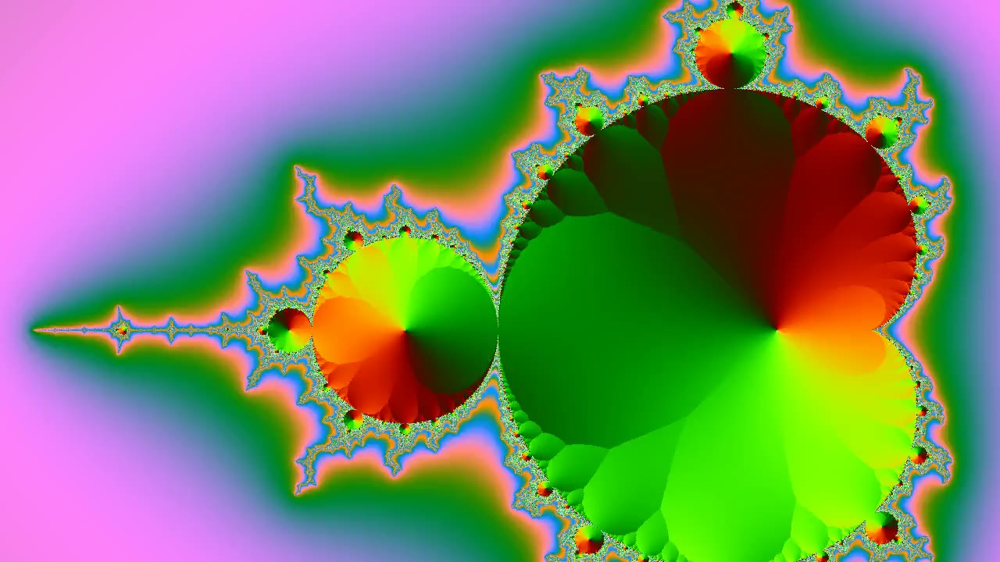

A · una vez y congela
Sin corte
Mirá el último cuadro. Al terminar, el video se cambia por la imagen del cuadro final en el mismo instante, sin fundido. El sujeto recortado queda por encima del título (en la muestra se genera en la página; en un sitio real es un PNG con alfa).
B · bucle
En bucle
Mirá el punto de unión. Es el loop nativo: este clip no está hecho para repetirse, así que ahí se nota el salto. Se pausa solo al salir de pantalla.
C · bumerán
Va y vuelve
Mirá el giro. Al llegar al final retrocede cuadro por cuadro y arranca de nuevo, sin corte. Funciona porque el clip es todo-intra; con uno normal se traba al retroceder.
D · con el scroll
Bajá y mirá
Mirá que el cuadro te siga. El scroll mueve la cabeza de reproducción: bajá despacio, frená, volvé. Si la imagen se traba o queda atrás, el clip no es todo-intra.